WTP Tutorials - JavaServer Faces
Tools Tutorial
Summary
In this tutorial we will build and execute a JavaServer Faces
application, and highlight the features contributed by the JSF Tools
Project.
By Raghu Srinivasan, Oracle Corporation.
May 24, 2006
Introduction
In this tutorial we will create and execute a web application
with JavaServer Faces capabilities. The WTP JSF Tooling project has
provided features for improving JSP source editing and validation, along
with simplified application building, configuration and execution.
You may wish to visit Building
and Running a Web Application before attempting this tutorial. That
tutorial covers setup of the server instance that this tutorial does
not.
Setup
Register JSF libraries
This feature allows for a named sets of jars to be created for
use with JSF Applications. We will be creating a library containing the
Sun JSF RI, Apache commons and JSTL jars.
Select Windows->Preferences->Web and XML->JSF Libraries. Click
on the New.. button to add a new library. Create the JSF Libraries as
shown in the following figures. Check the is JSF Implementation
check box when adding the Sun JSF RI library.
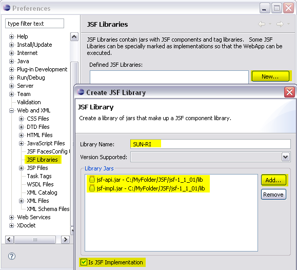
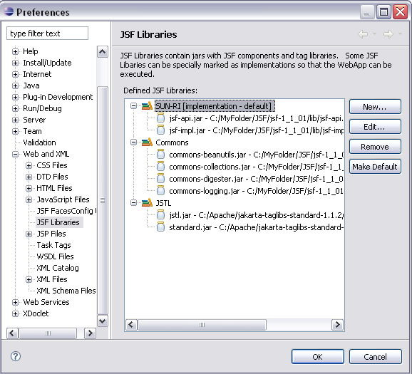
Create a JavaServer Faces Project
Create a New Dynamic Web Application with the name of JSFTutorial.
Set the target runtime to the Apache Tomcat 5.5
In the configuration section, select the JavaServer Faces
Project v1.1. Skip the next two panels to get to the JSF Capabilities
page.
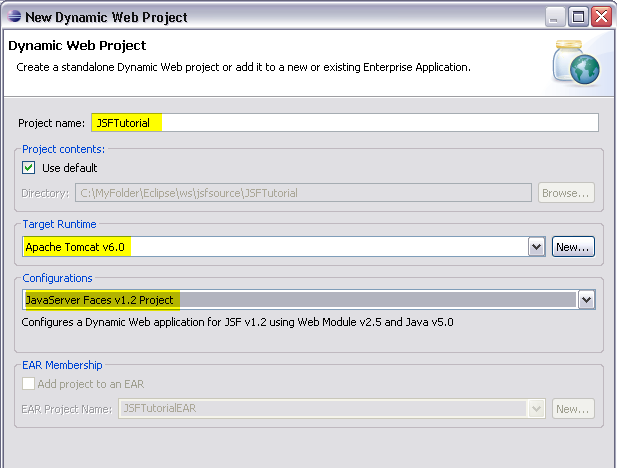
On the JSF Capabilities page, add the Commons and JSTL
library and select the Deploy JARS to WEB-INF/lib.
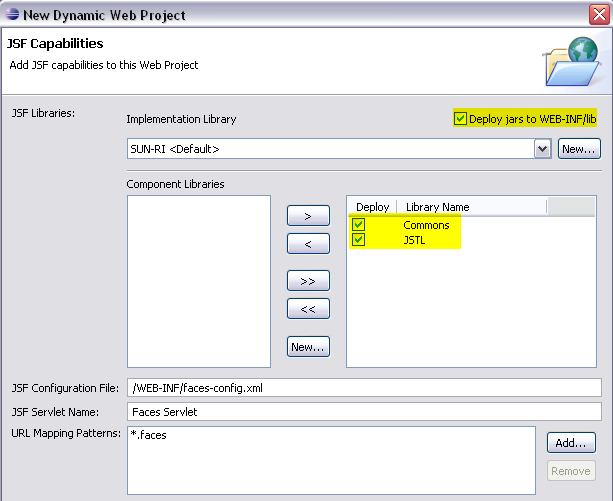
Click on the
Finish
button to create the JavaServer Faces Application. You may be prompted
to accept the license for the Web App DTD from Sun. You may also be
asked to choose the J2EE perspective upon completion. In both cases
accept.
Your JSF application has been created. Note that the web.xml file
has been updated with the Faces Servlet and servlet-mapping, a stub JSF
application configuration file (faces-config.xml) has been created, and
the build path has been updated with the implementation jars.
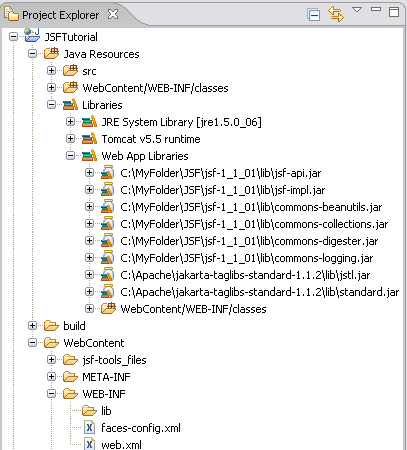
 If you
have an existing Dynamic Web Application, it is possible to add JSF
capabilities by going to:
If you
have an existing Dynamic Web Application, it is possible to add JSF
capabilities by going to:
Project Properties > Project Facets > Add\Remove Project
Facets…
Create a JSF JSP Page
Use the JSP Page wizard to create a page called login.jsp
in the Web Content folder of the new application. In the Select
Templates page of the wizard, select the New JSP(html) template.
Click Finish.
Add the JSF taglibs, the view and the form tag. The JSP page should look
like the following:

Add the following JSF tag,
<h:messages layout=""></h:messages>
. Postion the cursor inside the double-quotes of the
layout
attribute and hit
Ctrl+space
.You will get a pop-up with the list of valid values for the attribute.
Select
table
.The editor provides
content assist
for values of attributes that have a discrete list of values.
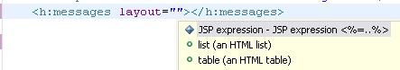
Now, change the value of the layout attribute to say,
tablex
and save the change. The editor will validate the value of this
attribute against the meta-data defined list of valid values and will
flag the line with a warning that the value is invalid.
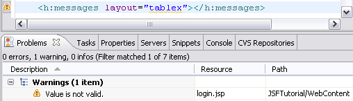
Change the value of the layout attribute back to
table
and save. Note that the warning message disappears.
Add the following JSF tag,
<h:outputLabel rendered=""></h:outputLabel>
. Position the cursor inside the double-quotes of the
rendered
attribute and hit
Ctrl+space
.You will get a pop-up with the list of values for the attribute. Select
the value,
true
. The editor provides
content assist
for values of attributes that are of Boolean type.
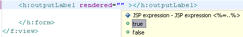
Complete the tag as shown,
<h:outputLabel rendered="true"
value="Name"></h:outputLabel>
Add the JSF tag,
<h:inputText tabindex="" ></h:inputText>
with an empty string for the value of the attribute
tabindex
and save. The Editor will report a warning that the value is not a valid
integer. Enter the value
0
and save. The Editor provides meta-driven validation of values of
attributes based on the type of the value as defined in the meta-data.
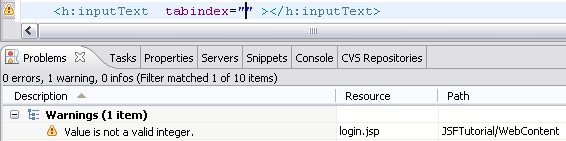
Add the
value
attribute to the above tag, with an empty EL expression for the value
attribute without a closing double-quote as shown below and save. The
editor has comprehensive validation of EL syntax and will indicate a
syntax error.
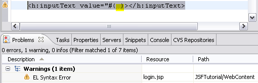
Change the EL expression to include the double-quote, but now remove the
closing bracket as shown below and save. The editor will mark the line
with an error.
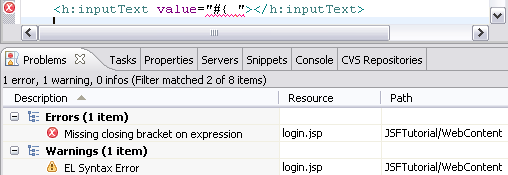
Now enter a value binding expression referring to an undefined managed
bean,
"#{loginBean.name}"
and save. The editor will flag a warning indicating that the variable
cannot be resolved.

Create a Java class,
com.tutorial.LoginBean
with the following code and save.
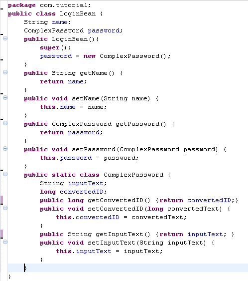
In the Project Explorer, expand the node, JSFTutorial->WebContent.
Double-click on
faces-config.xml
. This will launch the faces-config editor. Select the
ManagedBean
tab.

Click on the
Add
button. This will launch the New Managed Bean wizard. Select the class,
com.tutorial.LoginBean
. Click the Next button twice and the select the Finish button. This
will register the managed bean.
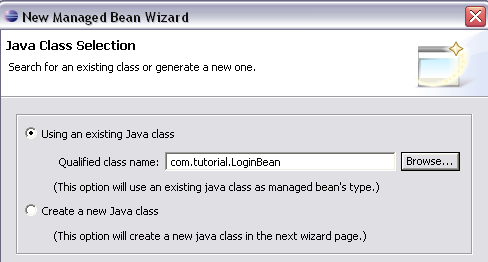
Switch to the
login
JSP page. Right-mouse click on the page and from the context menu,
select the
validate
option. Note that the page should now be valid.
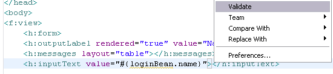
Add the JSF tag,
<h:inputSecret value="#{}"></h:inputSecret>
. With the cursor inside the brackets, hit
Ctrl+spacebar
. You should see a pop-up with a list of all the implicit objects plus
the managed bean defined above. Select the managed bean,
loginBean
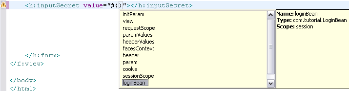
Enter the name of a property, say x, that is not defined in the managed
bean and save the change. The editor will report a warning that the
property cannot be resolved.
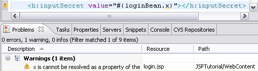
Delete the invalid property. Hit
Ctrl+spacebar
after the
'.'
in the bean name. You should see a pop-up listing the properties defined
in the managed bean. Select
password
from the menu.

The property
password
has nested properties. Enter a dot after
password
and Hit
Ctrl+spacebar
.The editor will pop-up a list of the nested properties. Select
convertedID

Add the JSF tag,
<f:converter converterId=""></f:converter >
and save. The editor will flag a warning that the converterId attribute
can not be null. The editor provides meta-data driven validation for
attribute values.
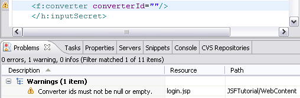
With the cursor inside the double-quote of the
converterId
, hit
Ctrl+spacebar
. You should see a pop-up with a list of all the standard converters
plus those registered in the faces-config file. The editor provides
content assist for various artifacts registered in the faces-config
files including validators.Select the
javax.faces.Long
id.
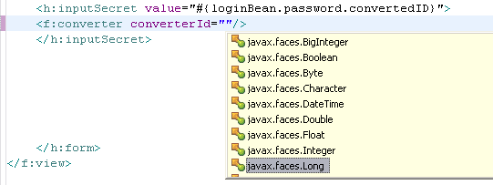
Create a Java class,
com.tutorial.validatePassword
that implements the
Validator
interface and save.
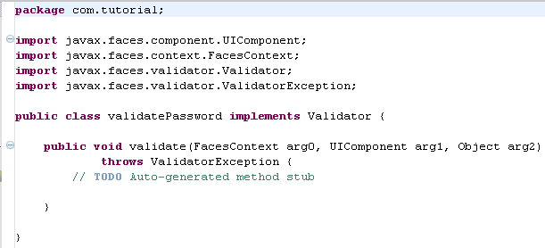
In the Project Explorer, expand the node, JSFTutorial->WebContent.
Double-click on
faces-config.xml
. This will launch the faces-config editor. Select the
Component
tab. Expand the
Validators
section.

Click on the
Add
button. Select the
Browse
button associated with the
Validator Class
field and select the
com.tutorial.ValidatePassword
class. Save the changes.

Add the JSF tag,
<f:validator id=""></f:validator >
. With the cursor inside the double-quote, hit
Ctrl+spacebar
. You should see a pop-up with a list of all the standard validators
plus those registered in the faces-config file. Select
Validate Password
.
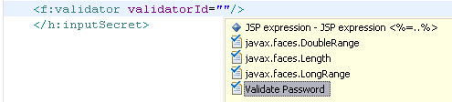
Add the JSF tag,
<h:commandButton action=""></h:commandButton >
and save. The editor will flag a warning that the action attribute can
not be null. This is another example of meta-data driven validation for
attribute values.

Complete the tag as shown below.
<h:commandButton action="login"
value="Login"></h:commandButton>
We will now move the static strings we have used in the page to a
resource bundle. To do this, add a file called,
messages.properties
in the folder
com.tutorial
. Define the properties as shown below and save the file.

Add the JSF tag,
loadBundle
as shown below.

Delete the string,
Name
in the value attribute of the
outputLabel
tag. Position the curson inside the brackets and hit
Ctrl+spacebar
. You should see a pop-up with a list that includes the
msg
variable that you defined in the
loadBundle
tag. Select it.

Enter a dot after
msg
and and hit
Ctrl+spacebar
. You should see a pop-up with a list of properties defined in the
messages.properties
file. Select the property,
name
.

Complete the login page as shown below.
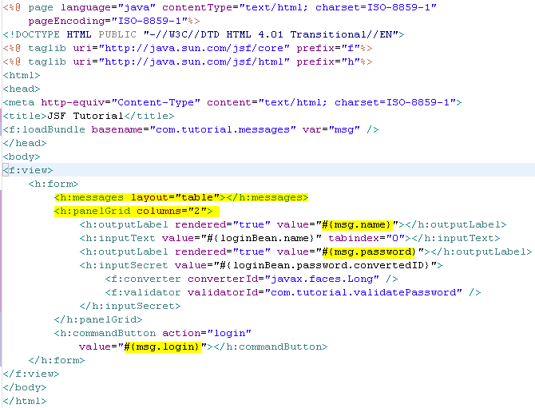
Create a new JSF page,
welcome.jsp
as shown below.
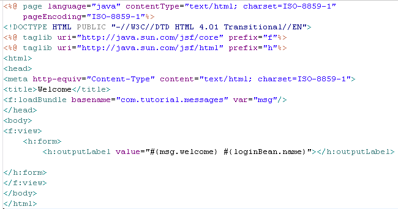
Faces Configuration Resource Editor
The JSF Tools project includes a special editor for the faces
configuration resource files. The following section gives a brief
introduction to the editor. A comprehensive tutorial detailing all the
features of the editor will be published soon.
Double-click on the
faces-config.xml
file to launch the Faces configuration editor. Switch to the
Navigation
tab.

- Add the login.jsp and welcome.jsp to the
Navigation tab. Select the Page control from the Palette and
drop it on the Navigation tab. Choose the page in the resulting Select
JSP File dialog.
- Connect the two pages. Click on the Link control in the
Palette, select the login page and draw a line to the welcome
page. Select the line in the Navigation tab and in the property view,
set the value of the from-outcome to login .

Testing the JSF JSP Page
1) We will now execute the page against the Apache Tomcat server.
Choose Run on Server using the context menu while selecting the
login.jsp page in the navigator.
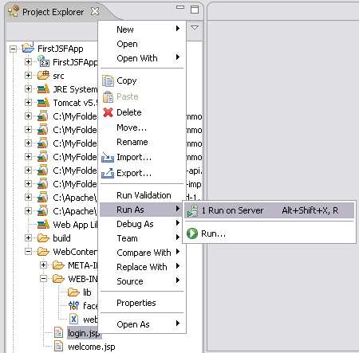
2) Choose your Apache Tomcat server and set it up as required if
you had not already done so.
3) Click Finish. You should see from the Console view that the Tomcat
server starts and then you should see the executing login page appear in
the Web Browser like below.
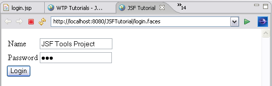
Click on the
login
button. You should navigate to the
welcome
page.

Congratulations! You have created and executed your first
JavaServer Faces application using the new Eclipse WTP JSF tooling.